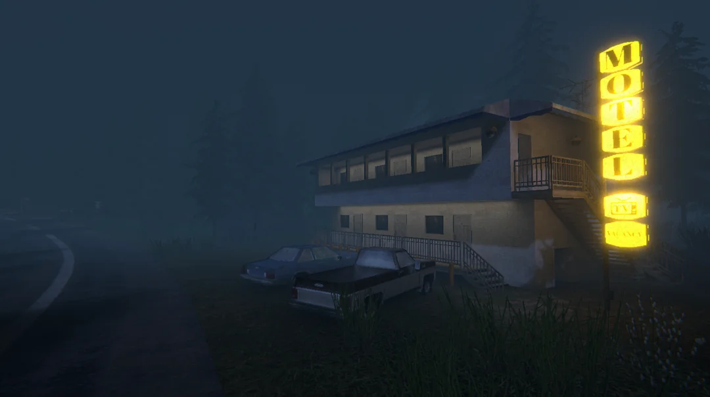
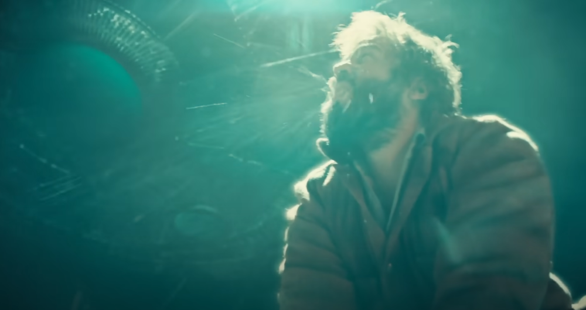
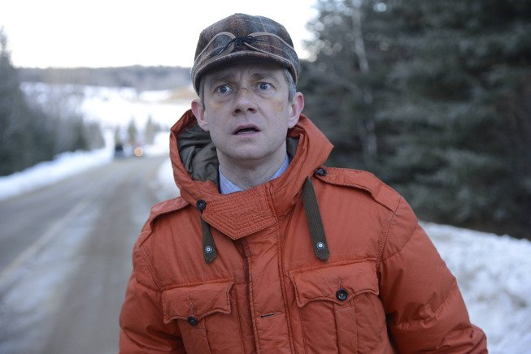
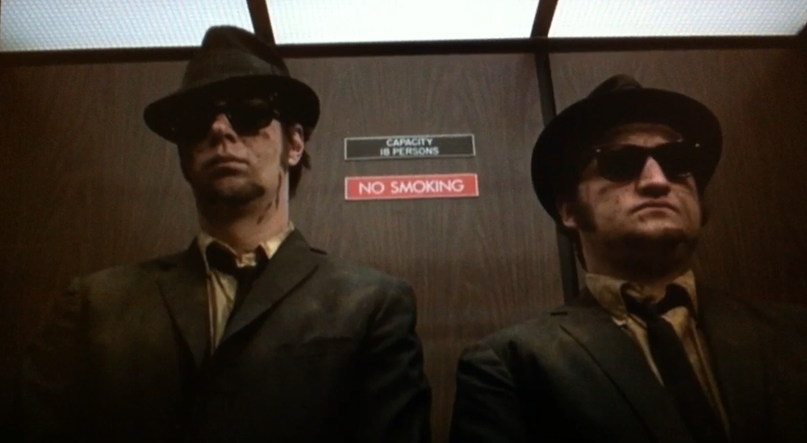
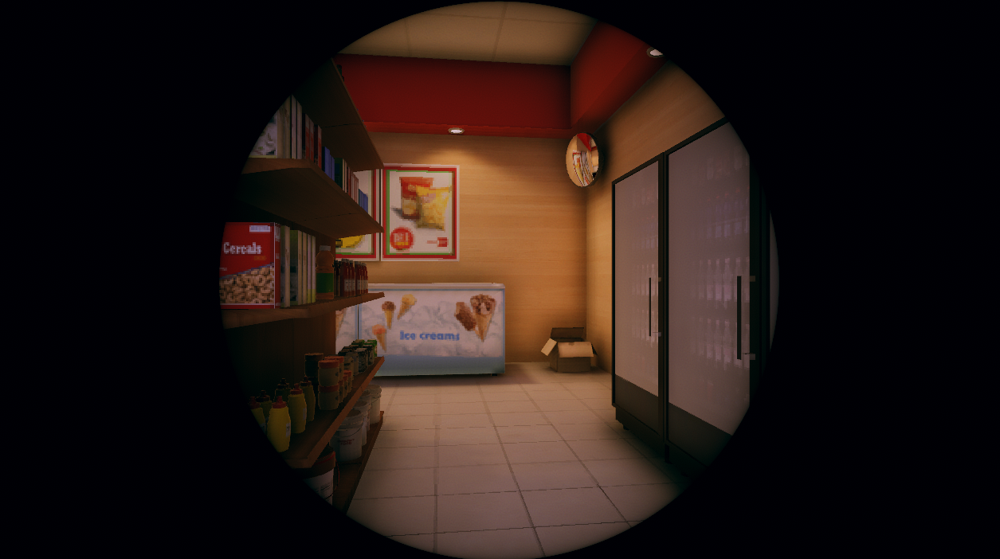
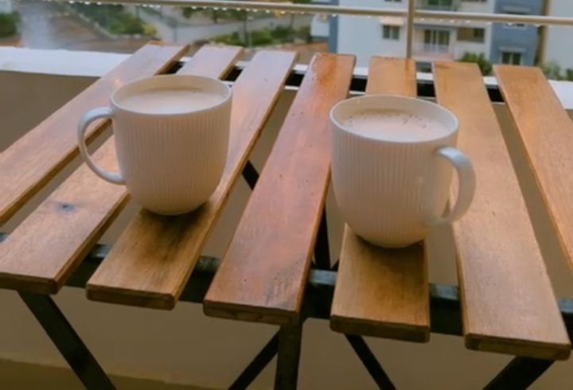
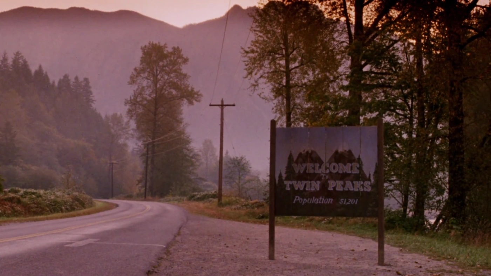
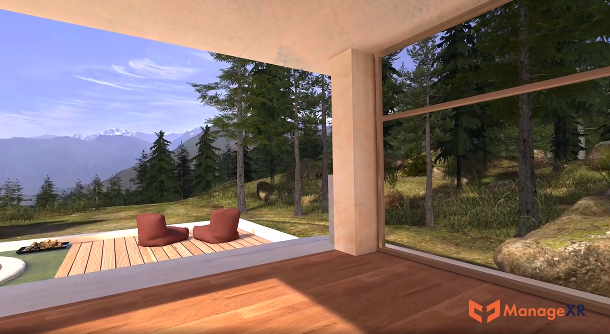
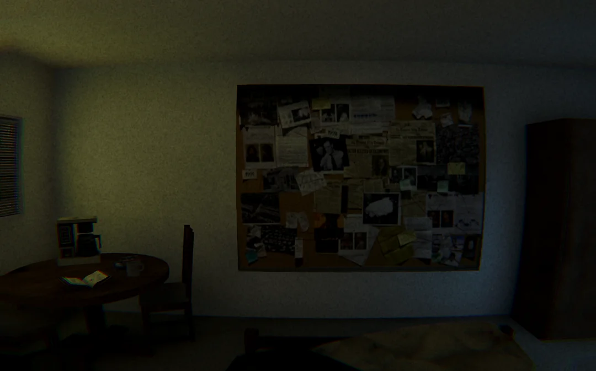
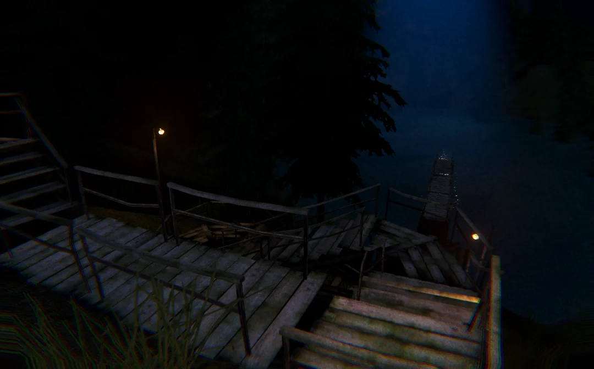

This post is about a new game I made called Detour!

THIS POST ALSO HAS SPOILERS FOR THE TV SHOW FARGO SEASON 1 AND 2!
Fargo Season 2
Sometime in 2020 I was watching the second season of Fargo, the amazing crime anthology series.
Episode 9 has a gunfight scene (see 3:45) during which a UFO appears out of nowhere, briefly distracting the character attacking Lou Solverson (played by Patrick Wilson) that allows Lou to shoot him.

The scene with the UFO plot twist in Fargo S2E9
But, this was so unexpected. Fargo is a pretty grounded crime TV show. The first season was about Martin Freeman playing a fumbling and cowardly man gently but fatally hitting his wife on her head with a hammer during a petty argument. He spends the rest of the season evading capture while being pushed to his limits through a series of desperate situations.

Martin Freeman in Fargo Season 1
UFO references are teased throughout season 2. This Reddit post does a great job of listing them. But it wasn't until episode 9 that I pieced it together, the show writers had been foreshadowing a scene like this all along. This same episode has a scene (at 2:05) in a convenience store which has a sticker on the wall with "We are not alone" written on it along with a UFO.
Violence and elevator music
It was after watching episode 9 that I thought the combination of a convenience store in a remote location, a murder and UFO activity would be an interesting premise for a game.
I was also thinking about the kind of music convenience store or marts play which is like Muzak.
Movies often interrupt an action intense scene with this kind of music for comedic effect. Think: John Wick fighting off a dozen people, stepping into an elevator with the typical funky elevator music playing, getting out and proceeding the action in another intense scene.

This scene from Blues Brothers has action interrupted by ironic elevator music
And there are scenes where music like this plays while an intense activity happens, usually violent and the scene being shot with a still camera. This often makes that scene more cold, heartless and brutal.
I felt pretty drawn to the idea of something like this happening in a convenience store while music plays. That inspired Detour's opening.
Initial idea
The screen starts black with supermarket music playing. You hear footsteps followed by some struggle and screams, and then a gun going off.
Screen fades in. Player is in a convenience store with a shopping list and the owner/cashier is dead.
You pick up the items that you need and get out.
Outside, you see you're in a very remote location. There's hardly anything. Just a motel and a gas station next to the store. This small area of limited commerce only exists here to cater to the drivers passing by, probably looking to stop for the night or buy something and keep going.
You are on foot. In the distance you see police sirens and flashes. They'll take some minutes to get to you.

I also wanted the game to have a circular view like this. But I decided not to go ahead with it. I still think it can be a nice look for some other game.
You start to walk around. There's no one at the gas station. All rooms in the motel are locked.
There's only one direction you can go in. The one opposite to where the cops are coming from. It's a road that goes through the woods.
As you walk towards the forest, a humming noise starts to grow loud. It's not the police sirens, it's something else. From behind the tall trees in front of you emerges a huge UFO with a beam of light shooting on the ground. It starts to move towards you. No matter where you run it keeps following you and finally catches you and the scene fades to black.
It's clear that you, the player, have been abducted. Dialogs appear.
"Did you get everything?"
"Almost"
"Almost?"
"Yes, I forgot the cake"
"Are you serious? And what's all this blood?"
"That's the cashiers..."
"WHAT?? Are you f***ing kidding me?"
Proceed to have a verbal argument. It is revealed that you, a male alien and you wife/gf are on a road (space?) trip to somewhere. You'd gone to the store to pick up some snacks in the middle of the trip and she really wanted the cake. You shot the cashier by mistake as he tried to tackle you, because, of course he was scared of you.
A pretty typical couple fight, probably something you'd see Martin Freeman and his wife in Fargo season 1 engage in. You as the player go through this argument and at the end they reach just enough of a truce to stop fighting and go ahead with your travels in silence and resentment and the game ends.
So, it was basically a little walking simulator where you are playing thinking you're a violent criminal and the ending reveals what's really happening.
Giving up and rethinking the idea
Now, I had this idea in 2021. I had recently made and release DEEPDOOR which somehow became somewhat popular. You can read more about DEEPDOOR here.
It was around that time that I started working at ManageXR and was busy and excited about new beginnings there. The Detour idea took a backseat. A "some day" project even though it wasn't a lot of work.
Some time later I also met my wife and the idea of making a game about a bickering couple that's hostile towards each other didn't seem like the best idea during the early days of us knowing each other.
This was until a few months later when I was telling her about the idea and I realized the alien couple could be supportive. Which is when I knew, I can make a wholesome game.

I'm not sure if the idea occurred to me while we were having tea. But here's some tea I made.
How about changing the game to feature an alien couple talking about snacks, baking and gossip? Needless to say, these dialogs are inspired by how my wife and I talk.
Twin Peaks
Despite this new take on Detour, I wasn't really working on it. The time I had outside my job at ManageXR I largely spent on my open source project UniVoice.
Then David Lynch passed away in January 2025, and for months I had been thinking of watching his iconic TV show, Twin Peaks. We started watching it in May 2025.
We absolutely binged that show. For days all we could talk about was that show. We read about it online, the fan theories, the hidden meanings. We were even dreaming about it in our sleep. The town of Twin Peaks felt like a place I know.

The mountains, trees and winding roads of Twin Peaks
With this came a lot of David Lynch interviews and fan videos in my YouTube video recommendations. Every couple of years I go into a Lynch rabbit hole, listening to him talk about creativity and his process. But this time it was different. And I felt like working on my idea.
So then I started.
Going with the flow
I started making the map using whatever free assets and open source I could find on the asset store. I did buy a paid terrain plugin called Atlas that I've wanted to try for a while. Although, I'm not very happy with it. MicroVerse seems like a much better solution if you're looking for an alternative.

Some terrain design work at ManageXR helped me brush up my world building skills.
It was around that time that I had been working on ManageXR's official 3D environment which also has a terrain and foliage, which greatly affected how the Detour map looked.
The initial plan was to be pixel-y and PS1-ish. But I decided to go with somewhat high fidelity lighting and post processing. The models themselves were relatively low poly and I didn't use much specular materials. The idea was to achieve a mid 2000s graphics style.
I did use billboard trees which were lightmapped with a very very very low lightmap resolution, so I could have hundreds of them. The final result ended up looking somewhat like Source Engine. Here's a nice X page for Source Engine Aesthetics btw

The Source Engine look in purely accidental. I love it!
With no game design document, the entire game was completely improvised.
There's a pond with still water. I actually had no plans to add a pond, but when I was making the terrain using some heightmap stamps of Atlas, I ended up with a crater-like formation by mistake. At first I thought I'll fill it densely with trees and have a bonfire at the bottom to attract the user. But I think I couldn't find any free bonfire assets I was happy with and I instead made it into a pond.

Fog, darkness and a wooden bridge on the verge of collapse.
I thought I had finished the game, but I realized that the "happy path" of the gameplay is too linear and straightforward. But at the same time people did get confused about where they need to go. So I added a mobile home that you can enter to get some hints and also add to the backstory of what's happening in this small time.
I added some references to Twin Peaks, specifically the main character Dale Cooper. This included his love for coffee, a tape recorder with an 11Labs voice that somewhat resembles Kyle MacLachlan's where he starts off talking about his investigation but then goes into minute detail about the kind of suit he wants. Classic Dale!
After you have everything, you pass the lake and go up the hill you find a transformer. Interacting with it causes loud thunder and lightning. Streaks of electricity emerge from some lamp poles and reach toward the sky. And there's a loud rumble like an earthquake.
A giant UFO emerges from behind the hills which moves towards you. It stops right above the center of the pond. When you walk to the spot right below the UFO, the screen goes black.
Dialogs appear. Screen fades in. Music fades in. You see two aliens sitting in a UFO talking. The dialogs reveal that you're just a pretty decent alien who wanted to buy some snacks for your trip.
Lessons drawn
Lately a lot of people have made some good arguments about making small games. Games that don't take too long to make or play.
What I love about these games is that I know I'd not be maintaining it and that it won't get too complicated. When I feel something doesn't make sense, I can even turn an idea completely on its head and move on. It's like the game develops in front of you.
From a developer/designer point of view, I had fun with the improvised nature of this project. The code was written with full knowledge that it'll be thrown away. Although between DEEPDOOR and Detour, there is some code I can polish and make it a part of my toolkit.
Visually I think I managed to make it a LOT better looking that I thought I could. For a small itch.io game, I'm pretty happy with how it looks!